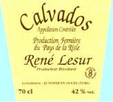
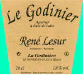
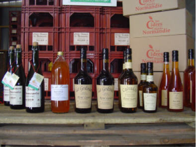

|
Cliquez sur le nom des produits |
|
|
Le Jus de Pomme |
|
 |
Notre |
Cliquez sur le nom des produits
dernière mise à jour de cette page
: 22.04.2011
|
|
Le Cidre Fermier |
 |
Le Calvados AOC
de Normandie La fabrication |
|
 |
L'Apéritif Maison La fabrication |
|
L' Cid' Aig La fabrication |
|
Cliquez sur le nom des produits |
|
|
Le Jus de Pomme |
|
|
Notre |
|  |
|
|
Où trouver nos produits ?
TARIF des Produits disponible sur demande : cliquez
Vous pourrez également les trouver
dans quelques
Bonnes Boutiques
ou sur certains
Marchés Fermiers et Artisanaux
ainsi que sur quelques
Bonnes Tables.
Consultez le Calendrier des manifestations
|
Retour Accueil ou Plan du site ou page précédente |
Écrivez nous pour donner votre impression et votre suggestion, merci.
Conception et Réalisation : René Lesur
info légale : l'abus d'alcool peut
nuire à la santé, consommer avec modération.
sauf pour la femme enceinte qui risque des dommages pour le fœtus.